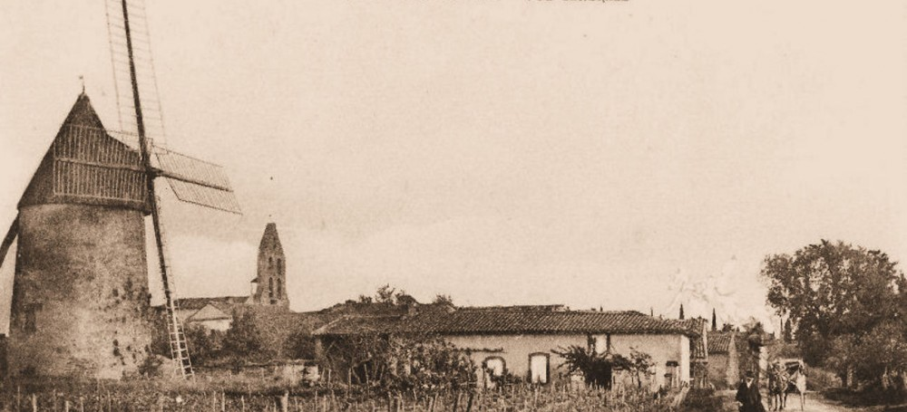

Le barda est lourd, la marche harassante et le froid du mois de mars 1835 naissant est sans pitié pour la colonne du 2ème régiment de chasseurs de la légion. Mathieu Kauffeman, alsacien de vingt-quatre ans, connait bien le froid, mais, transis, il n’avance plus et s’effondre, épuisé… Pour quelle raison succombe-t-il dans la nuit du 1er au 2, nul ne le saura jamais. Quelques heures après, on perçoit croissant le jeu de claquettes des sabots ferrésde la diligence cahotante partie de Montgiscard ou de Baziège. Les passagers de la chaleureuse expédition, insouciants, tournent à peine leurs regards vers le bivouac. Ils ignorent tout du drame. Et le soldat? Savait-il qu’il marchait sur les pas d’une autre légion passée là il y a… dix-huit siècles, sur une voie qui avait nom Via Aquitania, volonté de l’empereur Auguste de relier Narbonne, capitale de la Gaule narbonnaise, à Toulouse et Bordeaux?
Dans le monde antique, les unités de longueur reflètent les parties visibles du corps et leurs proportions: le doigt,digitus, la paume, palmus, le pied, pes, la coudée, cubitus, le pas simple, gradus et le pas double, passum. Les distances se calculent en mille pas, milliarum et en mille double pas, ou millia passum. Ce dernier, appelé mille romain, était dans notre région arrondi à 1480 mètres.
C’est du latin!, me direz-vous. Mais oui, et pourtant vrai! Le village pourrait devoir son nom à l’anatomie d’un romain et à sa situation au dixième double mille de la Via Aquitania depuis Tolosa : decima. Une preuve de plus s’il en fallait, Pompertuzat est placé ad nonum, au neuvième…
La tradition populaire veut qu’une borne milliaire se soit trouvée au bas de la côte de Montbois. Probablement, pour ce qui est de l’existence de la borne. Moins sûr pour son emplacement. À quelques centaines de mètres existent les vestiges d’une route secondaire. Première trace de l’occupation romaine au delà de la Via pour une simple halte dans un relais pour des légions en mal de repos ou prémices d’une communauté, même à des fins militaires?
Des troupes tout aussi redoutées continuent à polir ses galets. A l’automne 1355, la région s’embrase. Les uniformes, les étendards et les boucliers attestent de l’origine des assaillants. Un seul personnage aurait suffi à cela! L’incendiaire, c’est lui. La couleur de son armure et la bannière au dragon rouge crient son nom: Édouard de Woodstock, duc de Cornouailles et prince d’Aquitaine dit le Prince Noir! Surnom bien mérité, mais davantage dû à la noirceur de son âme qu’à celle du caparaçon de son destrier.
Qu’importe, decima voit le jour et perdure jusqu’en 1539 où une ordonnance impose le français comme langue officielle du droit et de l’administration: c’est l’acte de baptême de “Deyme”.
Même si l’étymologie antique est la plus retenue, Deyme pourrait résulter du nom dîme, decime, dixme en ancien français, qui mal prononcé ou mal orthographié aurait donné deyme et nous ramènerait à l’origine médiévale de sa fondation. Si l’on remonte à la généralisation et à la reconnaissance de la dîme sous le pape Adrien II, le village aurait vu le jour au VIIIème siècle. De plus, une parcelle, dite sol de la dîme, sol du dixme ou du disme apparaît sur les anciens cadastres. Ce lieu de perception de la redevance à l’entrée de la ville, dans la quartier du Moulin, accueillait la “grange aux dîmes”, comme dans bien d’autres villages.
D’autres marcheurs ont vu leur terminus sur la chaussée, bien avant le soldat Kauffeman. Deux anonymes, des mendiants, comme l’on disait alors, y ont perdu la vie en 1710. Le premier en juin, âgé de trente-cinq ans, avec pour tout bagage un chapelet trouvé dans ses poches, l’autre, venu de Bruguières, malade, a fait étape dans la maison des Dames Carmélites, en octobre où il a trépassé le 24.
Anglais toujours, le passage des troupes de Wellington et devant lui l’armée de Soult, pioche en main, occupée après la bataille de Toulouse du 10 mai 1814, à détruire la voûte du pont sur le canal du Midi.